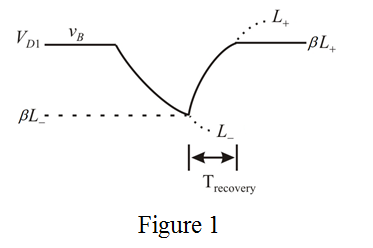

A negative pulse is generated at the output during the quasi stable state.
Determine the duration of the output pulse.
Substitute for  , 0.7 V for and for
, 0.7 V for and for  .
.
A negative pulse is generated at the output during the quasi stable state.
Determine the duration of the output pulse.
Substitute for , 0.7 V for and for .
The resistance,  is very much greater than the resistor
is very much greater than the resistor  .
.
Choose the resistor  as
as
Determine the minimum trigger voltage.
Thus, the minimum trigger voltage is .
Draw the signal waveform  of the circuit.
of the circuit.

The duration  of the output pulse is determined from the exponential waveform of
of the output pulse is determined from the exponential waveform of  .
.

Substitute for  , for and 0.7 V for .
, for and 0.7 V for .
Thus, the recovery time is .